Data publicării: 07.06.2018
Autor articol: Adrian Iftene
Introducere
Datorită dezvoltării remarcabile a telefoanelor inteligente, aplicațiile bazate pe realitate augmentată au devenit parte a vieții cotidiene. Browserele ce folosesc realitatea augmentată sunt cele mai frecvent utilizate pentru astfel de aplicații. Utilizatorii pot căuta și afișa locuri interesante din mediul fizic ce ne înconjoară prin intermediul acestor browsere.
De ce realitate augmentată?
Realitatea augmentată este o tehnologie în continuă creștere ce adună din ce în ce mai mulți utilizatori curioși de evoluția informaticii. Din ce în ce mai multe companii și dezvoltatori sunt prinși în acest val și investesc sume importante în acest domeniu. Tindem să credem că în viitor, aceasta va avea influență în multe domenii. Spre exemplu în design vestimentar, cu ajutorul unei perechi de ochelari sau cu ajutorul ecranelor ce joacă rolul oglinzilor inteligente se pot deja testa diferite vestimentații, iar în viitor se vor crea modele 3D ce vor sta la baza hainelor pe care le vom purta. Nu suntem departe de momentul în care o pereche de ochelari va înlocui smartphone-ul oferind servicii de telefonie și chiar conferințe video 3D.
De ce web?
În prezent, aplicațiile disponibile pe web sunt cele mai accesate și folosite, deoarece nu ai nevoie de resurse hardware specifice, și nu este nevoie să instalezi și să configurezi nimic. Realitatea augmentată are un potențial uriaș în această nișă și va atrage din ce în ce mai mulți utilizatori.
Realitatea augmentată în browserele web
Realitatea augmentată este un concept nou și elegant. Cu AR doar aruncăm o privire asupra lumii din jurul nostru și o vedem completată foarte ușor cu imagini, text, sunet și video. Companiile mari încep să exploreze posibilitățile AR cu dispozitive cum ar fi Meta Glasses, Microsoft HoloLens și Magic Leap. Aceste dispozitive AR, foarte interesante, încă nu sunt încă pregătite pentru a ajunge pe scară largă la consumatori. Cu toate acestea, există o altă modalitate de a introduce mai ușor realitate augmentată pentru utilizatori, folosind ceva la care ei au acces mult mai ușor – browserele de pe dispozitivele mobile.
AWE.Media
AWE este un produs bazat pe browserele ce suportă AR (Caulfield, 2017). Experiența AR trebuie să fie creată utilizând instrumentele AWE și găzduită pe serverele acestora, dar va funcționa fie în Firefox, Chrome, Opera sau Safari, fără a fi nevoie să instalăm plug-in-uri suplimentare.
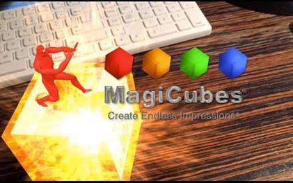
Odată ce creați o aplicație de realitate augmentată, pur și simplu trimiteți URL-ul către oricine doriți și, dacă au unul din browserele web folosite de peste 3 miliarde de oameni, atunci ar trebui să fie capabili să vizualizeze aplicația (vezi Figura 1). Puteți crea și vizualiza aceste aplicații utilizând orice tip de dispozitiv – telefon mobil, tabletă, calculator sau dispozitiv de tip HMD (head mounted display).
De asemenea, au capabilități bazate pe locație, care ne permit să adăugăm conținut virtual printr-o interfață simplă bazată pe hărți sau direct în vizualizarea noastră live prin camera web a dispozitivului pe care-l folosim, precum și urmărirea pe bază de markere de bază. În plus, au demonstrat recent prima versiune funcțională a NFT (Natural Feature Tracking), care funcționează într-un browser web standard, componentă care va fi lansată “în curând”.
Interfața AWE este simplă și ușor de folosit, singurul dezavantaj fiind acela că informațiile de tip ajutor sunt încă în dezvoltare. Dar, la 38 de dolari pe lună (chiar 19 dolari pe lună pentru o licență anuală), aproape oricine își poate permite să experimenteze și să vadă dacă îi satisface nevoile.
Chrome & WebAR
Google lucrează împreună cu comunitatea de dezvoltare pentru a adăuga capabilități AR la WebVR, însă are nevoie de un dispozitiv compatibil Tango, momentan existând doar două – Lenovo Phab 2 Pro și Asus ZenFone AR. Nu este surprinzator faptul ca Google își concentrează eforturile asupra Chrome, dar întrucât Mozilla este implicată și în WebVR, tindem să credem că acest efort va fi folosit mai târziu în Firefox sau în alt browser obișnuit (vezi Figura 2).
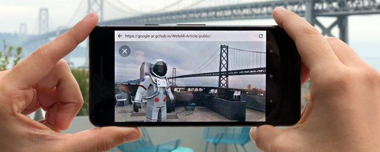
Detaliile proiectului luate direct de pe pagina GitHub:
Scopul acestui proiect este de a furniza o punere în aplicare inițială a unui posibil API pentru realitatea augmentată (AR) pentru Web peste Chromium. Prototipul inițial este construit pe platforma Tango pentru Android de către Google. Poate, în viitor vor fi suportate mai multe platforme. Există un prototip precompilat și de lucru pe care îl puteți folosi imediat împreună cu documentația API-urilor și câteva exemple. Există, de asemenea, un tutorial cu privire la modul în care putem construi propria versiune a Chromium modificat cu API-urile WebAR în el. Un obiectiv major al acestui proiect este de a iniția o conversație cu privire la modul de furnizare a capabilități de tip realitate augmentată pe Web: WebAR.
Deși acest proiect pare a fi destul de activ, nu există nicio vizibilitate față de momentul în care ar putea fi lansat.
Proiectul Argon
Proiectul Argon este un proiect de cercetare al Institutul de Tehnologie din Georgia pentru a crea un site web ce suportă AR, care poate fi vizualizat în browser. Momentan, browserul este disponibil numai pentru iOS (vezi Figura 3).
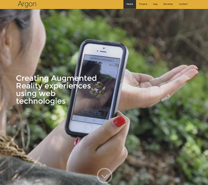
Awe.js
Un prim proiect mare pe care-l prezentăm în continuare constă într-o bibliotecă JavaScript numită Awe.js, care ne permite să creăm experiențe de realitate augmentată pentru aplicațiile ce folosesc web de pe dispozitivul mobil. În articolul (Catanzariti, 2015) autorul prezintă cum se poate crea o placă de control 3D care se activează pe baza unui marker. Autorul se conectează pentru a face ceva care poate fi activat printr-o solicitare HTTP de tip JavaScript, iar el a setat-o pentru a schimba culoarea becului LIFX folosind IFTTT.
Awe.js este o bibliotecă JavaScript care utilizează Three.js, camera aparatului și câteva tehnici destul de inteligente pentru a crea realitatea augmentată în browser. Acesta oferă patru tipuri diferite de experiențe AR, fiecare cu exemplul propriu pe Github:
- geo_ar – ne permite să așezăm obiecte la anumite puncte cu geo-locație.
- grift_ar – compatibil cu un Oculus Rift.
- eap_ar – se integrează cu controlerul Leap Motion.
- marker_ar – ne permite să creăm o experiență pe baza marcatorilor de tip realitate augmentată.
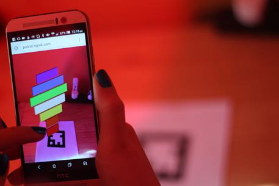
AR.js
Un al doilea proiect mare pe care-l prezentăm în acest articol este AR.js, care este o soluție care ne permite să realizăm eficient proiecte bazate pe realitatea augmentată pe web, disponibil pe github (Etienne, 2017). Dintre avantajele proiectului AR.js amintim:
- Este foarte rapid: funcționează eficient chiar și pe telefoanele mobile. Aceasta este prima dată când avem o soluție bazată pe open-source bazată pe web, capabilă să realizeze 60fps pe telefoanele existente.
- Este bazat pe Web: este o soluție web pură, deci nu este necesară instalarea. Este realizat în întregime în Javascript bazat pe three.js + jsartoolkit5.
- Este de tip Open Source: este complet open source și gratuit.
- Este standard: funcționează pe orice telefon cu webgl și webrtc.
Scopul AR.js este de a le permite oamenilor să folosească mai ușor realitatea augmentată; AR, care poate fi ușor experimentată pe telefoanele mobile din zilele noastre și care e ușor de proiectat folosind tehnologia web. Deci, acum, oricine cu un telefon modern se poate bucura de open-source AR, gratuit, de tip cross-platform și fără să necesite instalare (vezi Figura 5).
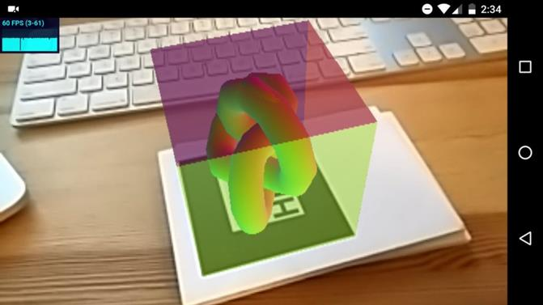
AR.js nu ar fi fost posibil fără câteva proiecte importante, care au apărut mai înainte. Datorită acestora se poate ajunge astăzi la 60 de cadre pe secundă. Aceste proiecte sunt:
- Three.js este o bibliotecă importantă ce permite crearea graficii 3D pe web.
- ARToolKit a fost în dezvoltare de ani de zile pentru realitate augmentată.
- emscripten și asm.js ne-au permis să compilam ARToolKit în JavaScript.
- Chromium a ajutat să fie foarte rapid.
Doar mulțumită tuturor acestor proiecte, s-a putut ajunge de la performanțe de 5fps, la 60fps pe telefoane vechi de 2 ani.
Cum folosim AR.js?
AR.js se bazează pe standarde și funcționează pe orice telefon cu WebGL și WebRTC. Funcționează pe telefoane cu sisteme de operare Android și Windows mobile. Din păcate, nu funcționează în prezent pe dispozitivele iOS, deoarece Safari nu suportă WebRTC, dar Apple lucrează la acest aspect în acest moment. Urmați următorii doi pași pentru a-l activa:
- Deschideți imaginea marker hiro de mai jos în browser.
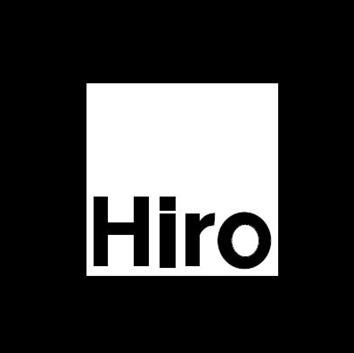
- Deschideți aplicație Web de realitate augmentată de la adresa http://jeromeetienne.github.io/AR.js/three.js/examples/mobile-performance.html în browser-ul telefonului și îndreptați-o spre ecran.
După pasul 2 configurarea s-a finalizat. Se va deschide o pagină web care accesează camera telefonului, va localiza marcatorul hiro și va adăuga o componentă 3D în partea de sus a acestuia (vezi Figura 7 de mai jos).
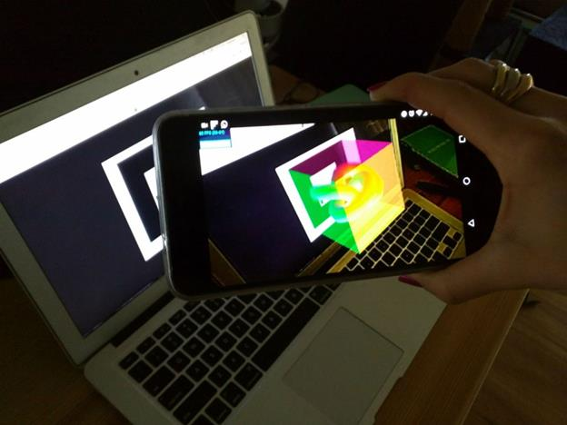
Ce aduce nou AR.js?
Cei de la AR.js sunt creativi și lucrează continuu la dezvoltarea de noi facilități în cadrul acestui proiect. Una dintre ele se referă la umbrele obiectelor, care au ca scop să sincronizeze poziția luminilor și umbrelor obiectelor virtuale cu cele reale pentru a obține o imagine rezultat cât mai apropiată de realitate (vezi Figura 8).
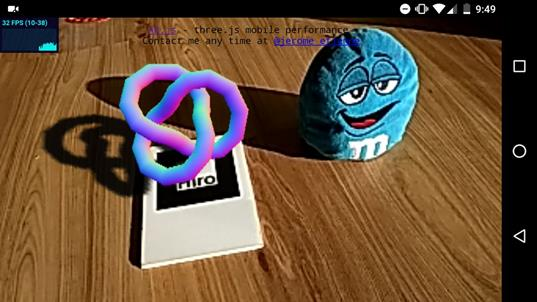
De asemenea, cei de la AR.js au colaborat foarte strâns cu Fredrick Blomqvist. În urma colaborării cu acesta, s-a implementat refracția, oferind un efect 3d transparent/sticlos (vezi Figura 6).
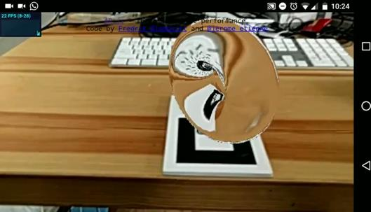
Ce va urma?
Performanțele au crescut destul de mult cu AR.js, dar încă se mai pot face optimizări. Folosirea webworkerilor ar crește utilizarea CPU. Compilarea în webassembly în loc de asm.js ar trebui să îmbunătățească timpul de încărcare și performanța procesorului.
Cei de la AR.js își doresc ca oamenii să înceapă să experimenteze realitatea augmentată și să se simtă confortabil cu ea. Pentru asta cei de la PS Vita au făcut o mulțime de aplicații de jocuri imaginative. Oricine poate face teoretic același lucru cu AR.js care rulează pe telefoane normale, fără a fi nevoie să cumpărăm un dispozitiv nou mai performant.
Alt lucru pe care îl putem face cu AR.js este dezvoltarea de aplicații educaționale cu teme legate de știință, cum ar fi aplicația Solar Sistem sau asemănătoare cu o aplicație interactivă de chimie.
Exemplu de aplicație construită cu Awe.js
În continuare vom vedea de ce avem nevoie pentru a construi o aplicație foarte simplă cu Awe.js (Catanzariti, 2015). Vom vedea care sunt pașii pentru a crea un control 3D care se deschide la identificarea unui marcator pe hârtie. Prin intermediul acestui control 3D vom schimba culoarea becului LIFX folosind IFTTT.
Pentru această aplicație, autorul a folosit Google Chrome pentru dispozitive mobile. E posibil să funcționeze și pe Firefox pentru mobile și pe anumite browsere desktop (pe Chrome și pe Opera au funcționat destul de bine pe Mac), dar cu siguranță nu este aceeași experiență ca un smartphone cu evenimente touch.
Vom avea nevoie, de asemenea, de un cont IFTTT și de o cunoaștere a modului de configurare a Maker Channel cu reguli care declanșează cererile HTTP. De asemenea, e nevoie să imprimăm marcatorul din Figura 7 pe o bucată de hârtie.
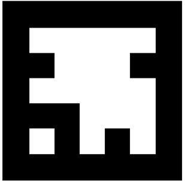
Codul aplicației este disponibil pe Github la adresa http://github.com/sitepoint-editors/ ARLIFXController. Totul începe în cadrul evenimentului de încărcare din fereastra principală. Primul lucru pe care îl surprindem mai jos este o variabilă folosită pentru a urmări dacă panoul de control al AR (numit aici “meniu”) este deschis sau nu. Inițial, este închis.
window.addEventListener('load', function() {
var menu_open = false;
// Our code continues here
});
Apoi se trece la folosirea bibliotecii awe.js. Tot ceea ce se face este definit în cadrul funcției window.awe.init(). Se începe cu câteva setări globale pentru scenariul AR ce va urma.
window.awe.init({
device_type: awe.AUTO_DETECT_DEVICE_TYPE,
settings: {
container_id: 'container',
fps: 30,
default_camera_position: { x:0, y:0, z:0 },
default_lights: [{
id: 'point_light',
type: 'point',
color: 0xFFFFFF
}]
},
Variabilele folosite mai sus sunt:
- device_type – Setarea valorii către awe.AUTO_DETECT_DEVICE_TYPE va face ca detectarea dispozitivului să se facă automat.
-
settings – setările ce vor fi modificate în timp ce aplicația va funcționa:
- container_id – ID-ul elementului ce va fi generat de aplicație.
- fps – numărul de cadre pe secundă (opțional).
- default_camera_position – poziția implicită a camerei ce vizualizează scena (va porni de la poziția (0, 0, 0)).
- default_lights – se poate inițializa un obiect de tip Three.js pentru luminile din scenă, fiecare având un ID, un tip de culoare și culoarea. Exemplul de mai jos conține doar un obiect de tip Three.js PointLight. Sunt mai multe opțiuni disponibile pentru tipul de lumină, care corespund la diferite tipuri de lumini Three.js – ‘area’, ‘directional’, ‘hemisphere’, ‘point’ și ‘spot’.
După ce aceste setări au fost definite, trebuie definit ce urmează să se întâmple atunci când awe.js a fost inițializat. Totul se face într-o funcție awe.util.require() care definește de ce capabilități de browser avem nevoie înainte de încărcarea fișierelor JavaScript de care vom avea nevoie. Aici se poate împiedica ca aplicația AR să funcționeze în anumite browsere.
ready: function() {
awe.util.require([
{
capabilities: ['gum','webgl'],
Fișierele de mai jos sunt importate cu funcționalități specifice pentru awe.js – lib/awe- standard-dependencies.js, lib/awe-standard.js și lib/awe-standard -window_resized.js, cu ajutorul lor definind biții standard și elementele pentru awe.js și gestionarea redimensionării ferestrei. Deoarece se folosesc marcatori, e nevoie să se includă și celelalte două fișiere listate mai jos.
files: [ ['lib/awe-standard-dependencies.js', 'lib/awe-standard.js'], 'lib/awe-standard-window_resized.js', 'lib/awe-standard-object_clicked.js', 'lib/awe-jsartoolkit-dependencies.js', 'lib/awe.marker_ar.js' ],
Odată ce am reușit să încărcăm toate aceste fișiere se execută funcția awe.js success(). Prima funcție pe care o vom rula întotdeauna când suntem gata să începem să afișăm elementele stabilește scena awe.js.
success: function() {
window.awe.setup_scene();
Toate elementele din awe.js sunt poziționate în cadrul “punctelor de interes” (POI). Acestea puncte specifice sunt marcate în scenă prin coordonate la care pot fi poziționate obiectele. Putem muta punctele de tip POI-uri precum și alte elemente. Pentru aplicația noastră se va crea un POI unic, de ori câte ori un anumit marcator de hârtie este identificat. Pentru a crea un POI se folosește funcția din awe.js awe.pois.add(). Poziția sa inițială a fost stabilită la (0, 0, 10000), care o poziționează la distanță până când suntem gata să o folosim. De asemenea, am stabilit că este invizibil până când se identifică marcatorul.
awe.pois.add({id: 'marker', position: {x: 0, y: 0, z: 10000}, visible: false});
Elementele pe care le adăugăm în POI-urile noastre sunt denumite “proiecții” în cadrul awe.js. Prima proiecție pe care o adăugăm în scena noastră a fost denumită wormhole (“gaură de vierme”), deoarece aceasta este un pătrat negru plat, unde elementele din meniu vor apărea în mod magic (vezi Figura 8 de mai jos).
awe.projections.add({
id: 'wormhole',
geometry: {shape: 'plane', height: 400, width: 400},
position: {x: 0, y: 0, z: 0},
rotation: {x: 90, z: 45},
material: {
type: 'phong',
color: 0x000000
}
}, {poi_id: 'marker'});
Sunt câteva opțiuni ale obiectelor pe care le putem adăuga în proiecții:
- geometry – se referă la opțiunea similară din Three.js. De exemplu, SphereGeometry în Three.js va fi reprezentată ca {shape: ‘sphere’, radius: 10} în awe.js, iar pentru a crea cuburi vom folosi {shape: ‘cube’, x: 20, y: 30, z: 5}.
- position – se pot modifica coordonatele x, y și z în legătură cu POI-ul său.
- rotation – putem roti obiectul după coordonatele x, y și z în relație cu POI-ul său. Gaura de vierme a fost rotită cu 90 de grade dup axa x și 45 grade după axa z pentru a părea mai naturală.
- material – definește materialul din Three.js. În exemplul de mai sus s-a folosit ‘phong’ (MeshPhongMaterial din Three.js). Alte opțiuni posibile sunt ‘lambert’, ‘shader’, ‘sprite’ și ‘sprite_canvas’, dar se pot defini alte culori folosind codurile hexazecimale.
- texture – nu a fost folosită în exemplul de mai sus, dar poate fi folosită pentru a defini textura. Un exemplu de utilizare poate fi texture: {path: ‘yourtexturefilename.png’}.
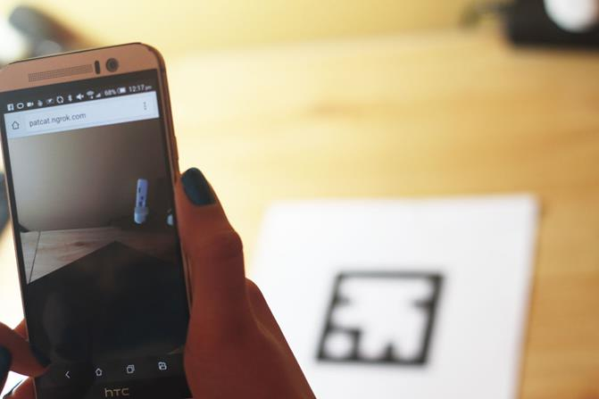
În acest exemplu, au fost adăugate la scenă șapte casete/cuburi (elementele de meniu), fiecare având o înălțime de 30 pixeli și a fost plasat cu 31 de pixeli mai jos pe axa y, astfel încât să fie inițial ascunsă de gaura de vierme.
awe.projections.add({
id: 'ar_button_one',
geometry: {shape: 'cube', x: 60, y: 30, z: 5},
rotation: {y: 45},
position: {x: -5, y: -31, z: -5},
material: {
type: 'phong',
color: 0xFF0000
}
}, {poi_id: 'marker'});
Fiecare dintre acestea are un ID de forma ‘ar_button_ {NUMBER}’ unde numărul este indicele butonului de meniu de jos în sus. Acest ID va fi folosit în apelurile de tip HTTP la IFTTT. După definirea proiecțiilor noastre, se definește un element cheie al aplicației AR – evenimentul de detectare a marcatorilor.
awe.events.add([ // Our events here ]);
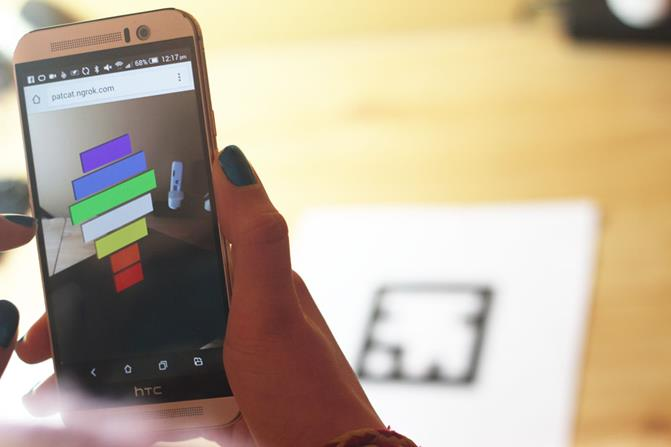
Avem doar un eveniment awe.js, deci există doar un singur eveniment. Evenimentul este definit cu un ID pe care am putea să-l apelăm oricând. Definim tipurile de dispozitive pe care le vom folosi.
id: 'ar_tracking_marker',
device_types: {
pc: 1,
android: 1
},
Mai jos avem funcțiile register() și unregister() pentru a adăuga și elimina elementul de tip listner pentru evenimentului care urmărește marcatorul.
register: function(handler) {
window.addEventListener('ar_tracking_marker', handler, false);
},
unregister: function(handler) {
window.removeEventListener('ar_tracking_marker', handler, false);
},
Apoi se definește tratarea evenimentului care se va executa odată ce vom identifica un marcator. Se caută marcatorul “64” și se rulează doar un răspuns când este găsit.
handler: function(event) {
if (event.detail) {
if (event.detail['64']) {
// Our response!
}
În cadrul răspunsului nostru de găsire a unui marcator, dorim să mutăm punctul de interes denumit “marker” în funcție de bucata noastră de hârtie și să îl facem vizibil. Îl transformăm astfel încât să se alinieze la marcatorul fizic folosind event.detail [’64 ‘].transform.
awe.pois.update({
data: {
visible: true,
position: {x: 0, y: 0, z: 0},
matrix: event.detail['64'].transform
},
where: {
id: 'marker'
}
});
De asemenea se face obiectul wormhole vizibil.
awe.projections.update({
data: {
visible: true
},
where: {
id: 'wormhole'
}
});
Dacă nu vedem marcatorul, dar meniul este încă deschis, îl lăsăm așa, dar ascundem gaura de vierme. Principalul motiv pentru aceasta este că, odată cu schimbările de lumină, marcatorul poate deveni ilizibil.
else if (menu_open) {
awe.projections.update({
data: {
visible: false
},
where: {
id: 'wormhole'
}
});
}
Dacă nu există nici un marcator și meniul nostru nu este deschis, atunci întregul sistem POI este ascuns, așteptând să îl vedem.
else {
awe.pois.update({
data: {
visible: false
},
where: {
id: 'marker'
}
});
}
Totul se finalizează prin actualizarea scenei.
awe.scene_needs_rendering = 1;
Ultimele elemente pentru funcționalitate finală necesită configurarea evenimentele pentru clic. Toate acestea se află în cadrul evenimentului object_clicked.
window.addEventListener('object_clicked', function(e) {
// Our click events
});
Evenimentul nostru de click conține ID-ul proiecției pe care a fost făcut clic în cadrul e.detail.projection_id. Utilizăm o declarație a de tip switch pentru a determina reacția la clic. Clicurile de pe gaura de vierme deschid și închid meniul virtual, iar clicurile de pe butoanele meniului virtual vor declanșa culorile luminilor.
switch (e.detail.projection_id) {
case 'wormhole':
// Clicks to open and close our menu
break;
case 'ar_button_one':
case 'ar_button_two':
case 'ar_button_three':
case 'ar_button_four':
case 'ar_button_five':
case 'ar_button_six':
case 'ar_button_seven':
// Clicks on our virtual menu buttons
break;
}
Evenimentele de clic de pe gaura de vierme deschid și închid meniul în funcție de faptul că menu_open este adevărat sau fals. Dacă este falsă, atunci se folosește funcția awe.js awe.projections.update() pentru a anima fiecare buton în sus pe axa y după o secundă. Această mutare o va scoate din gaura de vierme. Singura diferență dintre mișcarea fiecărei proiecții este cât de mult se deplasează fiecare obiect după axa y.
if (!menu_open) {
awe.projections.update({
data: {
animation: {
duration: 1
},
position: {y: 35}
},
where: {id: 'ar_button_one'}
});
În caz contrar, dacă meniul este deschis, atunci le mutăm pe toate înapoi în poziția inițială sub gaura de vierme și le ascundem vederii.
else {
awe.projections.update({
data: {
animation: {
duration: 1
},
position: {y: -31}
},
where: {id: 'ar_button_one'}
});
După declarația noastră else, vom comuta menu_open la valoarea opusă.
menu_open = !menu_open;
În cadrul evenimentului cu clic pe buton, efectuăm o cerere HTTP către IFTTT care include ID-ul butonului nostru ca și numele evenimentului și cheia necesară pentru a accesa serviciul IFTTT. Nu folosim cu adevărat datele care se întorc, doar le trimitem către consolă pentru depanare, rezultatele reale provin de la IFTTT care reacționează la apelul HTTP.
…
case 'ar_button_seven':
var request = new XMLHttpRequest();
request.open('GET', 'http://maker.ifttt.com/trigger/'+e.detail.projection_id+'/with/key/yourkeyshouldbehere', true);
request.onload = function() {
if (request.status >= 200 && request.status < 400) {
var data = JSON.parse(request.responseText);
console.log(data);
}
};
request.send();
break;
După toate acestea, dacă awe.js nu se încarcă din cauza incompatibilităților sau a altor motive, avem un script alternativ care se încarcă pentru a afișa un mesaj de eroare.
{
capabilities: [],
success: function() {
document.body.innerHTML = '<p>Try this demo in the latest version of Chrome or Firefox on a PC or Android device</p>';
}
}
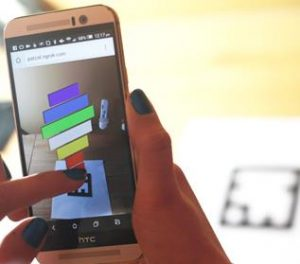
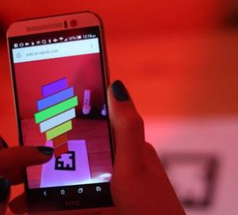
Figura 10: Selectarea unei opțiuni din meniu (în stânga) și actualizarea luminii (în dreapta) (Catanzariti, 2015)
În Figura 10 se poate vedea cum funcționează aplicația: în urma selectării unei opțiuni din meniu (în stânga) se actualizează lumina (în dreapta).
Concluzii
Realitatea augmentată în web este o direcție nouă apărută în ultimul timp, care are premise de dezvoltare continuă în perioada următoare. Domeniile cu cea mai mare aplicabilitate sunt industria jocurilor și educația, multe companii de acest tip implicându-se în proiectele AR pentru web existente.
Avantajele proiectelor mari prezentate în acest articol (Awe.js și AR.js) sunt de ordin hardware: nu e nevoie să achiziționăm telefoane sau tablete noi mai performante, nu avem nevoie de un procesor mai puternic, nu avem nevoie de mai mult spațiu, dar și de ordin software, deoarece nu trebuie să instalăm nimic pe dispozitivele noastre.
Cei de la AR.js au mers un pas mai înainte decât ceilalți din domeniu, încercând să facă experiențele cât mai reale, adăugând umbre obiectelor generate și folosind reflexia.
Referințe bibliografice
- Catanzariti, P. (2015) Augmented Reality in the Browser with Awe.js. Sitepoint. http://www.sitepoint.com/augmented-reality-in-the-browser-with-awe-js/
- Caulfield, E. (2017) Augmented Reality in Your Browser. AR Intelligence, Actionable Information on Augmented & Mixed Reality. http://www.linkedin.com/pulse/augmented-reality-your-browser-edward-caulfield/
- Etienne, A. (2017) AR.js: Efficient Augmented Reality for the Web. UploadVR. http://uploadvr.com/ar-js-efficient-augmented-reality-for-the-web/